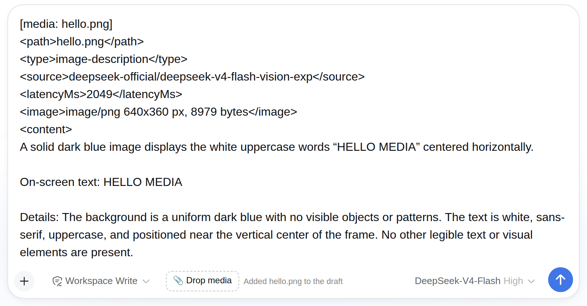
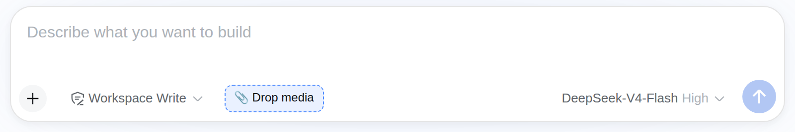

Plugin for the DeepSeek Harness
Your agent can’t see the file you hand it. This fixes that in ten minutes.
dsh-media-reader gives a DeepSeek Harness agent five tools to read local images, audio and video — including on a model route that cannot accept media at all, where a picture is otherwise a dead end.
- 5 tools + a composer drop target
- Works on text-only routes
- Nothing installed with a package manager
- 18/18 live checks, 97/97 unit tests
media_image · 2.0 s
inserted into the draft as text
[media: hello.png] <path>hello.png</path> <type>image-description</type> <source>deepseek-official/deepseek-v4-flash-vision-exp</source> <latencyMs>2049</latencyMs> <image>image/png 640x360 px, 8979 bytes</image> <content> A solid dark blue image displays the white uppercase words “HELLO MEDIA” centered horizontally. On-screen text: HELLO MEDIA Details: The background is a uniform dark blue with no visible objects or patterns. The text is white, sans-serif, uppercase, and positioned near the vertical center of the frame. No other legible text or visual elements are present. </content>
Trimmed for display; long file paths shown as names. Nothing here is typed by hand — the text is the output the plugin produced on this machine.
Showing the image result. A model on a text-only route can now read this.Install it with your own agent — no call, no booking
Answer a few questions and get a prompt that drives your LLM through the install, the verification and the first real task. Nothing is sent anywhere: the prompt is generated on your device, and it is written for a model, not for you — so a language barrier cannot get in the way.
What it does
media_probe— real metadata from ffprobe: kind, duration, dimensions, frame rate, codecs, audio and subtitle tracks.media_image— on a vision route the actual image; on a text-only route a factual description from your configured vision provider.media_audio— local Whisper transcript with timestamps, written as.txt,.jsonand.srt.media_video— shot detection, bounded key frames, a contact sheet, and the spoken transcript fused onto the shot timeline.media_evidence— an evidence pack: tempo, key, loudness, onsets, chords, shot boundaries, lyrics confidence, every field taggedMEASURED,INFERREDorUNVERIFIED.

What was actually verified
Every number here was measured on the artifact you download, not on a development tree.
- 18/18live checks against a running harness, on both a vision route and a text-only route
- 97/97unit tests in the shipped suite
- 76 filesin
MANIFEST.json, each with a sha256 you can check - 0home paths or credentials inside the bundle — checked by the build

How to check it yourself, before paying
The plugin crate is public. Download it, verify its hash, and run the smoke test on your own harness before you buy anything:
sha256sum -c dsh-media-reader-0.1.0.tar.gz.sha256./install.sh --dry-run— reads out every action firstDSH_TEST_URL=… ./smoke.sh— 18 checks on your machine
That is the point of publishing it: you should not have to take my word for any of this.
Free, or paid — the line is commercial use
| Use | Free | Commercial licence — $79 / KSh 10,000 |
|---|---|---|
| Read, study, run it for yourself | Yes | Yes |
| Use in a commercial product or a paid service | No | Yes |
| Use inside a company’s internal, revenue-earning workflow | No | Yes |
| Updates for 12 months | — | Yes |
| Redistribute or resell it | No | No — not granted at any price |
The full terms ship in the bundle as LICENSE, at the top level and
beside the payload. If your use is not obviously on one side of that line, ask before you pay: one email
now is cheaper than a disagreement later.
What it does not do
Known defect, disclosed
Dropping an audio or video file inserts an <artifacts> element
containing absolute local paths, e.g. /home/<user>/artifacts/videos/…/digest.md. If you
then paste that draft into a chat or a ticket, you publish your own directory layout. Image drops carry
only the file name. A fix is queued; until then, drop images for drafts you intend to share.
- It does not judge whether a picture or a film is any good. It extracts evidence; taste is yours.
- It makes no generation calls and spends no provider credits.
- Non-speech audio is out of scope — it says so rather than inventing words.
- Install is by copy-restore, deliberately.
dsh plugin addcan leave a profile unable to run any tool call; this bundle never uses it.
Questions
What do I need on the machine?
Node, ffmpeg and python3. Local transcription needs a small virtual environment
with faster-whisper; the docs walk through it. No package manager is used or required.
Does it work if my model cannot accept images?
That is the case it was built for. On a text-only route, an image is returned as a factual description
from your configured vision provider, and the built-in read_image is redirected to
media_image rather than failing silently.
Is a licence per machine or per team?
Per team, one time. Install it on as many machines as your team uses; do not hand the crate to another company.
How is it delivered?
Immediately: the checkout completes and you get the download plus your licence reference. The crate is the same public artifact you can already inspect, verified by the same hash.
What if it does not work on my harness?
Tell me what happened — open an issue — and I will either fix it or refund you. I would rather lose a sale than keep one for something that does not run.